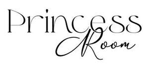

Trade Mark Journal No.2026/005 30 January 2026
UK00004322583 12 January 2026 (20,21)

- Class 20
- Hangers [Coat -]; Chairs on skid frames; Vanity units [furniture]; Bathroom vanities; Bathroom vanity units incorporating basins; Vanity units incorporating basins; Bathroom vanities [furniture]; Bathroom mirrors; Shaving mirrors; Pedestal cabinets; Mirrored cabinets; Decorative mirrors; Hand mirrors [toilet mirrors]; Bathroom cabinets; Hand-held mirrors [toilet mirrors]; Mirrors (Hand-held -) [toilet mirrors]; Toilet mirrors being hand-held mirrors; Personal compact mirrors; Mirrors; Make-up mirrors for the home; Non-metal mirror hangers; Make-up mirrors for purses; Mirrors [furniture]; Wall mirrors; Cabinet fittings [not of metal]; Drawer pulls, not of metal; Mouldings for mirrors; Cupboards fitted with mirrors; Bathroom cupboards; Mirror tiles; Tiles (Mirror -); Ceramic pulls for cabinets, drawers and furniture; Towel dispensers, not of metal; Mirror stands; Bath rails, not made of metal; Basin cabinets; Tool chests, not of metal, empty; Fittings, not of metal, for blinds; Wall-mounted curtain holders; Locker mirrors; Name plates, not of metal; Pedestal tables; Printed mirrors; Towel dispensers, not of metal, fixed; Dispensers (Towel -), not of metal, fixed; Towel dispensers, fixed, not of metal; Metal storage cabinets; Nightstands; Metal cabinets; Metal venetian blinds [internal]; Bathroom stools; Counter tops for use with sinks; Mirrors (silvered glass); Silvered glass [mirrors]; Hand mirrors; Glass (Silvered -) [mirrors]; Drawer pulls of porcelain; Knobs, not of metal; Vice benches, not of metal; Benches (Vice -) not of metal; Plugs for sinks, not of metal; Toilet paper dispensers, not of metal; Hand-held mirrors; Bathroom furniture; Metal tool cabinets; Pedestal storage units [furniture]; Ceramic pulls for cabinets; Pedestal chairs; Bed casters, not of metal; Fittings, not of metal, for roller blinds; Identity plates, not of metal; Make-up mirrors for travel use; Plastic novelty license plates; Shelving frames, not of metal [furniture]; Fixed napkin dispensers not of metal; Mirrors [looking glasses]; Pedestal units [furniture]; Soap dispensers, not of metal; Mirror frames; Toilet paper dispensers, fixed, not of metal; Mirrors [looking glasses not for carrying with]; Interior venetian blinds; Wardrobes; Wardrobe doors; Wardrobe lockers; Cupboards for bedrooms; Closets; Cupboards being furniture; Wardrobe sliding doors; Cupboards; Covers for clothing [wardrobe]; Wardrobe interior fitments; Fitted cupboards; Storage cupboards [furniture]; Clothes racks [furniture]; Drawers for furniture; Kitchen dressers [furniture]; Kitchen dressers; Dressers [furniture]; Dressers; Kitchen cupboards; Dressers [dressing tables]; Fitted bedroom furniture; Closets (Towel -) [furniture]; Towel closets [furniture]; Clothes hangers, clothes stands [furniture] and clothes hooks; Storage drawers [furniture]; Drawers; Hangers for clothes; Hangers (Clothes -); Clothes hangers; Clothes lockers; Fronts of cupboards; Chests of drawers; Closet organisers [parts of furniture]; Drawers [furniture parts]; Drawers as furniture parts; Clothes hangers and clothes hooks; Fitted kitchen furniture; Wall cupboards; Cupboard doors; Furniture chests; Furniture for bathrooms; Washstands [furniture]; Bedroom furniture; Panelling for furniture; Room dividing cupboards; Clothes rails; Fittings (Non-metallic -) for cupboards; Furniture shelves; Shelves [furniture]; Fitted furniture; Furniture racks; Racks [furniture]; Storage shelves [furniture]; Lockers [furniture]; Doors for furniture; Furniture doors; Furniture for kitchens; Furniture cabinets; Cabinets [furniture]; Armoires; Storage cabinets [furniture]; Coat racks [furniture]; Luggage racks being furniture; Modular bathroom furniture; Non-metallic clothes hangers; Shelves being nursery furniture; Stationery cabinets [furniture]; Furniture for washrooms; Coverings (Fitted -) for furniture; Consignment shelving [furniture]; Furniture incorporating beds; Slatted furniture; Prefabricated shelves [furniture]; Kitchen furniture; Cupboard units; Pedestals [furniture]; Furniture units for kitchens; Hanging storage racks [furniture]; Wall shelves furniture; Stacking dresser drawer units; Bathroom fittings in the nature of furniture; Shelves for filing-cabinets [furniture]; Wooden racks [furniture]; Furniture being convertible into beds; Ice storage shelves [furniture]; Desk racks [furniture]; Sections of panelling for furniture; Dividers for drawers; Furniture for caravans; Clothes hooks; Seats; Chairs [seats]; Stadium seats (Cushions for -); Booster seats; Seats [furniture]; Office seats; Seats for children; Shower seats; Bath seats; Seats of metal; Metallic seats; Seat cushions; Love seats; Metal bench seats; Portable folding stadium seats; High seats [furniture]; Seat pads; Seats adapted for babies; Bath seats for babies; Floatable [inflatable] seats; Floating inflatable seats; Support pillows for use in baby car safety seats; Support cushioning for use in car safety seats for babies; Elastic straps (constituent parts of sofa seats); Adjustable seat carriers; Tables; Desks and tables; Counters [tables]; Trestle tables; Dining tables; Picnic tables; Sideboard tables; Bedside tables; Tables [furniture]; Drop-leaf tables; Display tables; Bench tables; Kitchen tables; Folding tables; Bases for tables; Coffee tables; Console tables; Marble tables; Tables for use in gardens; Drafting tables; Occasional tables; Drawing tables; Dressing tables; Pasting tables; Conference tables; Side tables; Office tables; Tea tables; Massage tables; Computer tables; Mosaic tables; End tables; Work tables; Tables of metal; Writing tables; Draughtman's tables; Dining room tables; Camping tables; Planning tables; Drafting tables [furniture]; Draftsmans' tables; Decorators' tables; Table tops; Card index tables; Three-mirror dressing tables; Chopping blocks [tables]; Height adjustable tables; Changing tables for babies; Table legs; Trestles for use as table supports; Non-metal trestles for supporting tables; Table decorations of plastic; Industrial work tables; Baby changing tables; Nappy changing tables; Frames; Frames for pictures; Picture frames; Frames (Picture -); Frames for mirrors; Mouldings for picture frames; Frames for photographs; Picture rods [frames]; Photo frames; Furniture frames; Display frames; Moldings for picture frames; Photograph frames; Bed frames; Frames (Picture -) of metal; Embroidery frames; Frames (Embroidery -); Mounts [frames] for photographs; Picture holders [frames]; Frames for signboards; Moldings [mouldings] for picture frames; Picture frames (Moldings [mouldings] for -); Leather picture frames; Kneeling frames; Photograph frames of wood; Picture frame mouldings; Mouldings made of wood for picture frames; Carved picture frames; Frames for display boards; Photograph frames of metal; Mouldings made of plastics for picture frames; Holders for photographs [frames]; Paper picture frames; Bed frames of metal; Frames for bed canopies; Brackets (Non-metallic -) for frames; Picture frames of precious metal; Display frames of metal [furniture]; Picture frame moldings; Frames (Picture -) of non-metallic materials; Mouldings made of substitutes of wood for picture frames; Frames (Non-metallic -) for containers; Picture and photograph frames; Picture frame brackets; Brackets (Picture frame -); Picture frames [not of precious metal]; Chairs; Recliners [chairs]; Reclining chairs; Lounge chairs; Swivel chairs; Dining chairs; Rocking chairs; Folding chairs; Deck chairs; Bed chairs; Inflatable chairs; Arm chairs; Chair cushions; Office chairs; Convertible chairs; Banqueting chairs; Chairs being office furniture; Shower chairs; Drafting chairs; Barbers' chairs; Chair beds; Conference chairs; Drawing chairs; Fishing chairs; High chairs; Work chairs; Babies' chairs; Roofed wicker beach chairs; Contour chairs; Ergonomic chairs for seated massage; Hairdressers' chairs; Easy chairs; Chairs with castor wheels; Hairdresser's chairs; Low armless fireside chairs; Benches [furniture]; Chair legs; High chairs for babies; Lounge chairs for cosmetic treatments; Recliners [furniture]; Bean bag chairs; Vice benches [furniture]; Chair pads; Babies' bouncing chairs; Cushions [furniture]; Couches; Portable back support for use with chairs; Reclining armchairs; Armchairs; Sofas; Seating furniture; Desks [furniture]; Furniture for sitting; High stools [furniture]; Swivel stools; Lounge furniture; Saw benches [furniture]; Pouffes [furniture]; Saw benches being furniture; Lap desks being furniture; Swivel stands [furniture]; Office armchairs; Mobile stools [furniture]; Upholstered furniture; Stools; Trestles [furniture]; Bentwood furniture; Stackable furniture; Footstools; Benches; Trolleys [furniture]; Credenzas [furniture]; Wooden panels for furniture; Reading easels [furniture]; Barstools; Cushions; Modular desks [furniture]; Upholstered convertible furniture; Sofa beds; Picnic units [furniture]; Picnic benches; Legs for furniture; Mirrors enhanced by electric lights; Mirrors for use in powder compacts; Tiles (Mirror -) for fixing to walls; Transparent doors of glass for furniture; Frameless picture holders; Porcelain window handles; Cheval glasses; Glass knobs; Front plate knobs (Non-metallic -); Drawer pulls of glass; Sash window pulls, not of metal; Furniture; Furniture and furnishings; Metal furniture and furniture for camping; Wooden furniture; Patio furniture; Outdoor furniture; Nursery furniture; Household furniture; Garden furniture; Lawn furniture; Wooden shelving [furniture]; Leather furniture; Shop furniture; Furniture moldings; Office furniture; Furniture (Office -); Indoor furniture; Furniture for storage; Storage furniture; Furniture of metal; Metal furniture; Bamboo furniture; Furniture parts; Furniture partitions; Arbours [furniture]; Pet furniture; Furniture partitions of wood; Partitions of wood for furniture; Furniture (Partitions of wood for -); Furniture for vivariums; Consoles [furniture]; Furniture for offices; Antique style furniture; Furniture for shops; Altars [furniture]; Transformable furniture; Furniture for conservatories; Metal cabinets [furniture]; Glass furniture; Inflatable furniture; Furniture (Inflatable -); Garden furniture manufactured from wood; Fireguards [furniture]; Metal shelving [furniture]; Furniture for children; Joints for furniture; Computer furniture; Furniture for camping; Camping furniture; Furniture for saunas; Domestic furniture; Cane furniture; Screens [furniture]; Furniture screens; Countertops [furniture parts]; Metal office furniture; Shelves; Shelf units [furniture]; Box shelves; Shelves for storage; Shelf dividers (Non-metallic -); Book shelves; Library shelves; Shelves for books; Shelf brackets (Non-metallic -); Shelf bars (Non-metallic -); Shelf supports (Non-metallic -); Display shelves; Shelf dividers of metal [parts of furniture]; Folding shelves; Shelves for file cabinets; Benches with shelves; Shelf dividers (Non-metallic -) being parts of furniture; Shelf supports of metal [parts of furniture]; Writing shelves; Shelf supports (non-metallic -) [parts of furniture]; Shelf brackets (Non-metallic -) being parts of furniture; Slanted shelves; Rack bars for shelves [non-metallic]; Show shelves; Shelves for typewriters; Shelving; Non-metallic wall shelves [furniture]; Hangers (Non-metallic -) for shelves; Shelves of metal [furniture]; Bookshelves; Shelves for sale in kit form; Non-metallic shelves [furniture]; Shelves in the nature of furniture; Shelves for display purposes; Wall shelves [structures] of metal; Drawer dividers; Fixings, not of metal for shelves; Drawer fronts; Bedside cabinets; Office shelving; Drawer storage for cards; Drawer slides [furniture hardware]; Bookcases; Shelving troughs; Display cabinets [other than refrigerating display cabinets]; Storage racks; Shelves of non-metallic materials [furniture]; Metal shelving; Bottle racks; Storage boxes [furniture]; Storage racks to hold vehicle mats; Disc cabinets [furniture]; Shelving for sale in kit form; Literature racks for the storage of printed material; Wooden storage boxes; Wall shelves [structures] of non-metallic materials; Desk tops; Cabinets; Cabinets for display purposes [other than refrigerating display cabinets]; Cabinets for waste bins; Plate racks [furniture]; Hangers (Non-metallic -) for shelving; Book rests [furniture]; Drawer knobs (Non-metallic -); Relocatable metal storage racks [furniture]; Storage boxes for pillows [furniture]; Trays being parts of shop display furniture; Glass cabinets; Display cabinets; Channelled strips (Non-metallic -) for securing shelves to walls; Book stands [furniture]; Shop shelvings; Drawer pulls of wood; Shelving units; Racks [furniture] for casks; Modular shelving [furniture]; Shelving made of metal [furniture]; Kitchen cabinets; Racks; Plastic mesh cushioning sheets for lining shelves; Paper racks [furniture]; Racks being furniture of metal; Rack bars [furniture]; Non-metallic storage racks [furniture]; Non-metallic racks [furniture] for use in storage; Wine racks [furniture]; Storage racks for firewood; Cabinets for storage purposes; Storage units [furniture]; Storage modules [furniture]; Storage racks for storing works of art; Mobile storage racks [furniture]; Wood storage tanks; Storage units for cupboard conversions; Plastic storage tanks; Beds; Bunk beds; Divan beds; Foldaway beds; Beds, bedding, mattresses, pillows and cushions; Wooden beds; Beds for pets; Bed mattresses; Infant beds; Folding beds; Beds of wood; Water beds; Feather beds; Beds for animals; Adjustable beds; Rods for beds; Beach beds; Camp beds; Dog beds; Beds for birds; Portable beds; Transportable beds; Bedding for cots [other than bed linen]; Cat beds; Bedding for nursery cots [other than bed linen]; Children's beds; Slatted bases for beds; Inflatable pet beds; Portable beds for pets; Portable infant beds; Beds incorporating inner sprung mattresses; Beds made of wood; Bed slats; Mattresses; Beds for household pets; Beds incorporating divan bases; Bumper guards for cots, other than bed linen; Animal housing and beds; Wheels (Non-metallic -) for beds; Futon mattresses [other than childbirth mattresses]; Hybrid beds being soft sided waterbeds [other than for medical use]; Bumper guards for cribs, other than bed linen; Bean bag beds; Bed heads; Bed bases; Bed rails; Bath pillows; Nap mats [cushions or mattresses]; Air bed lounger; Sleeping mats for camping [mattresses]; Pillows; Mattresses [other than child birth mattresses]; Latex mattresses; Floating inflatable mattresses [airbeds]; Foam mattresses; Straw mattresses; Cots; Camping mattresses; Non-metal bed fittings; Spring mattresses; Mattresses (Spring -); Beach beds incorporating wind shields; Clothes rods; Clothes covers; Clothes organisers; Clothes stands; Shoe organisers; Jewellery organizer displays; Drawer organizers; Jewelry organizer displays; Hanging closet organizers; Room dividers; Extendible sofas; Settees; Convertible sofas; Wall sofas; Divans; Chaise lounges; Chaises longues; Chaise longues; Cushions (upholstery); Soft furnishings [cushions]; Ottomans; Divans made of wicker; Armrests; Chaise longue; Furniture for use in auditoria; Padded furniture; Massage divans; Screens for fireplaces [furniture]; Bedsteads; Wooden bedsteads; Anti-roll cushions for babies; Kneeling stools; Ceramic pulls for drawers; Cash drawers (Non-metallic -); Metal drawers [parts of furniture]; Drawer pulls of plastic; Drawer pulls of earthenware; Drawer handles (Non-metallic -); Wooden chests with drawers covered with decorated paper; Indexing cabinets [furniture]; Drawer sliders (Non-metallic -); Wooden chests for the storage of toys; Non-metal drawer trims; Toilet cabinets; Shoe cabinets; Filing cabinets; Key cabinets [furniture]; Computer cabinets [furniture]; Cabinet doors; Drawer gliders (Non-metallic -); Storage baskets [furniture]; Cabinets for storing articles; Sliding dividers [furniture partitions] for rooms; Storage chests made of wood; Cupboards for tea-things (chadansu); Soundproof cabinets [furniture]; Toy boxes [chests]; Toy boxes and chests; Drawer runners (Non-metallic -); Drawer guides (Non-metallic -); Cabinets (Index -) [furniture]; Index cabinets [furniture]; Cabinets for storing materials; Locker boxes [furniture]; Filing cabinets in the nature of furniture.
- Class 21
- Bathroom glass holder.
Yasmine Sabbar